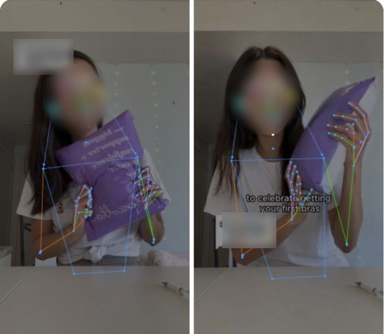
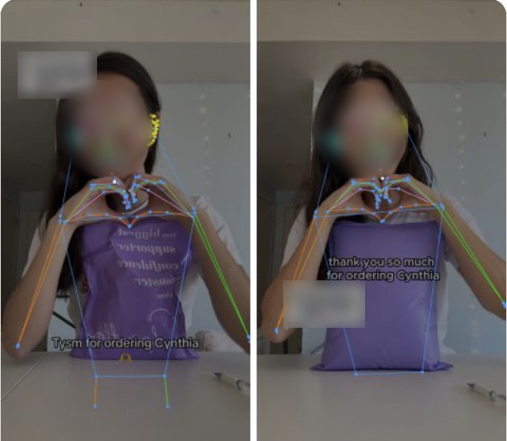
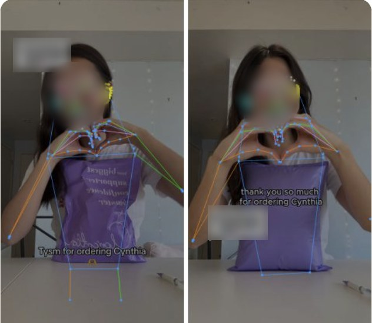

Footage provenance Was it made from yours?
Find the original behind the copy.
Upload your original video and the one you suspect was made from it. We run three independent tests: the body and its motion, the scene and visuals, and the script. If any one of them was copied, it shows up, even when the face or voice has been swapped.
- 3
- Independent tests
- 7
- AI models
- 2 fps
- Frame-by-frame
Compare two videos
- Upload or fetch videos
- Start GPU and load models
- Script: transcribe and compare speech
- Scene & visuals
- Body & motion
- Final score
Usually 3–5 minutes. You can keep this tab open; the result gets its own link.
Content similarity
–
Three tests · final score is the highest
The final score is the highest of three tests: body & motion, scene & visuals, and script. A high score suggests video B reused video A's content. Note that the same creator filming in the same room, or two videos reading a trending script, can also score high on one test. Results are evidence to support a review or takedown request, not proof of identity or of legal infringement.
Example Same moves, different face
The face changed. The performance didn't.
The original creator (left in each pair) and a suspected copy (right). We map a full-body skeleton on every frame and compare posture: where the arms, hands and head are, moment by moment. Even with a different face, the copy repeats the original's movements beat for beat.



Faces and personal details are blurred for privacy. Timestamps show where each moment appears in the original (A) and the suspected copy (B).
Method
Seven models, three tests. If any test matches, it was copied.
Commercial deepfakes swap whatever they need to (the face, the voice, the script or the background) and keep the rest. So we test each part separately and report the strongest match. We sample two frames per second from each video and transcribe its speech. Only moments where a person is clearly on screen (the person detector is confident and the person cut-out is large enough) are compared visually, so title cards, black frames and empty shots can't create false matches.
- Pose estimation Posture: which way the arms, hands, head and body point, and where the hands and head sit relative to the shoulders. Matches the same moves even when re-performed by someone else, cropped or zoomed. Body & motion
- Body-part segmentation Maps the head, hair, upper body, arms, hands and lower body, and compares how those regions are laid out in the frame. Body & motion
- Surface normals The direction each patch of skin and fabric faces: fine 3D surface detail. Body & motion
- Pointmap Relative depth of every pixel of the person: the overall 3D body shape. Body & motion
- Human matting The exact silhouette, including hair and loose clothing. Also used to cut the person out for the scene test. Body & motion
- Image fingerprints Compares the background square by square (table, wall, ceiling, props), ignoring the person. Catches the same room, set and shot with someone else edited in. Scene & visuals
- Speech to text Transcribes what's said; the two scripts are then compared phrase by phrase. Catches a reused script read by a new face or AI voice. Script
Each test looks for matched sections rather than one start-to-finish match, so a copy that is trimmed, re-ordered, sped up, mirrored, or only uses a few seconds of the original inside a longer video still lines up, and each section is listed with its timestamps. Each test is calibrated on a labelled set of known copies and unrelated videos, and the final score is the highest of the three.
Privacy notice
Videos you upload, and the analysis results, are stored privately so we can run the comparison, show you the result, and review and improve the system. They are not public and are not sold or shared. Your result is visible to anyone you give its link to. We store a one-way hash of your network address to enforce daily limits, not the address itself.
Only upload videos you have the right to use. The service compares footage; it does not identify who a person is. To have your uploads deleted, email hello@example.com with your result link.